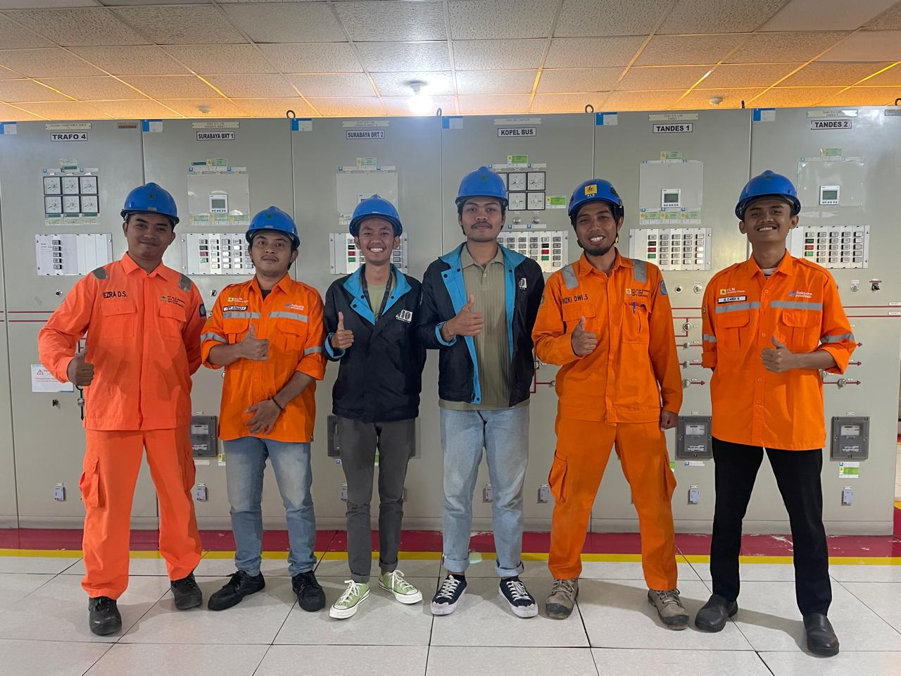
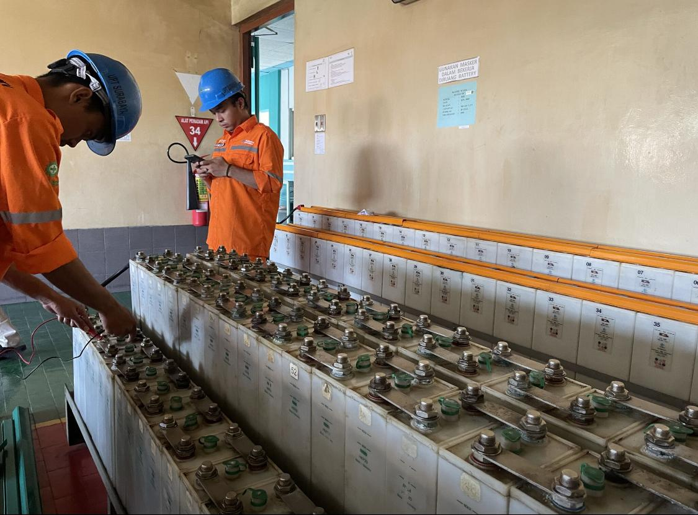
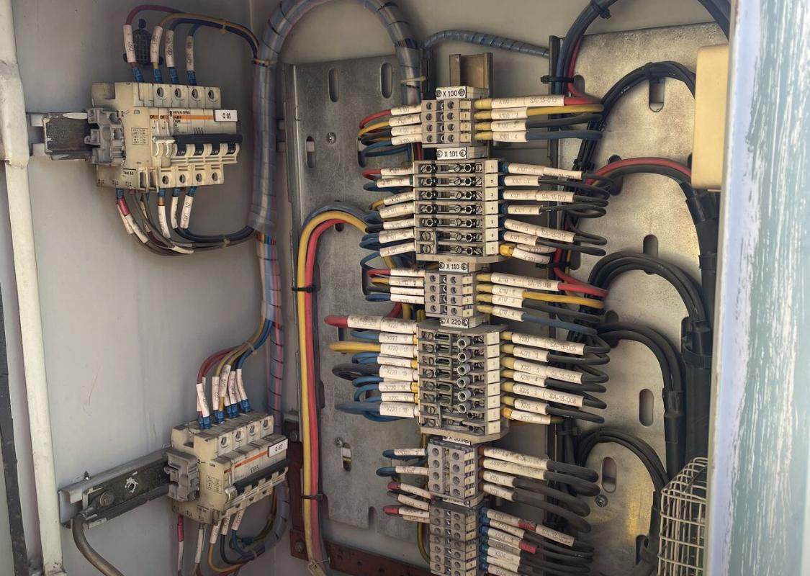
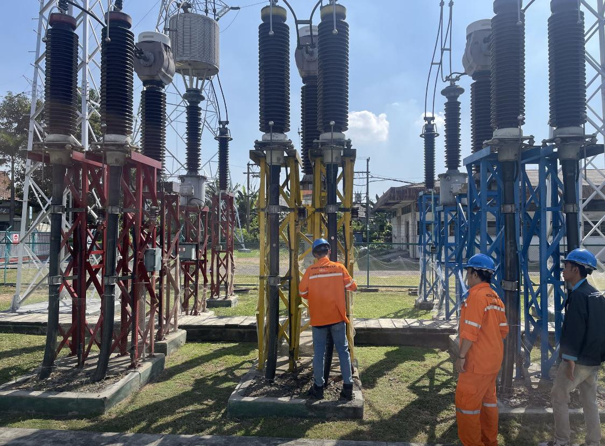
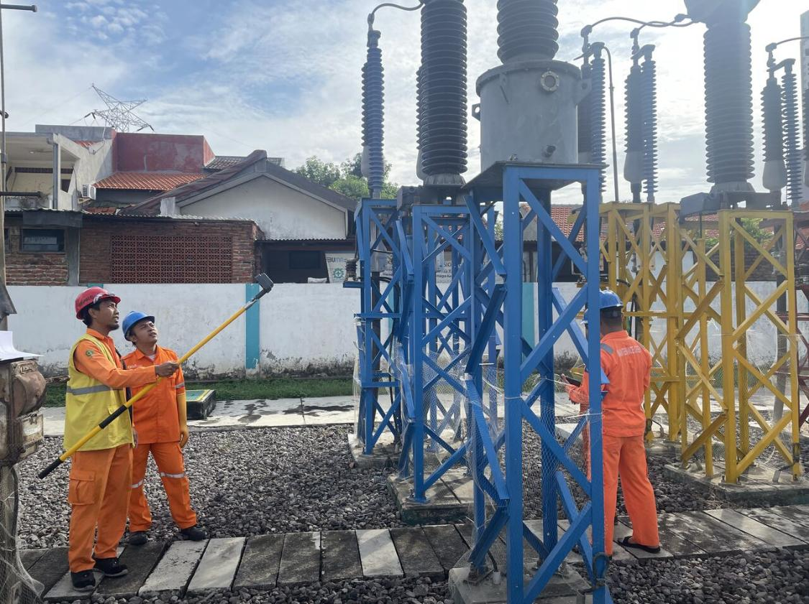
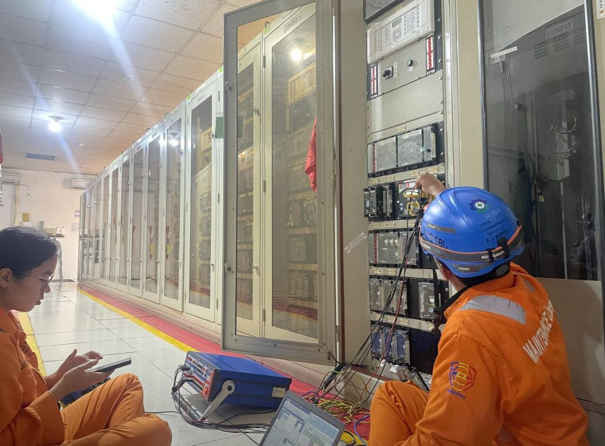

Timeline: Jul 2024 - Aug 2024






During my internship at PT PLN (Persero), I was assigned to the Transmission Division focusing on the inspection and monitoring of 150kV transmission networks. The project emphasized ensuring operational reliability, performing switchyard inspections, and measuring power loads to maintain stable electricity transmission performance.
Microsoft Excel, PLN internal monitoring systems, measurement instruments, and reporting tools.
Back to Portfolio